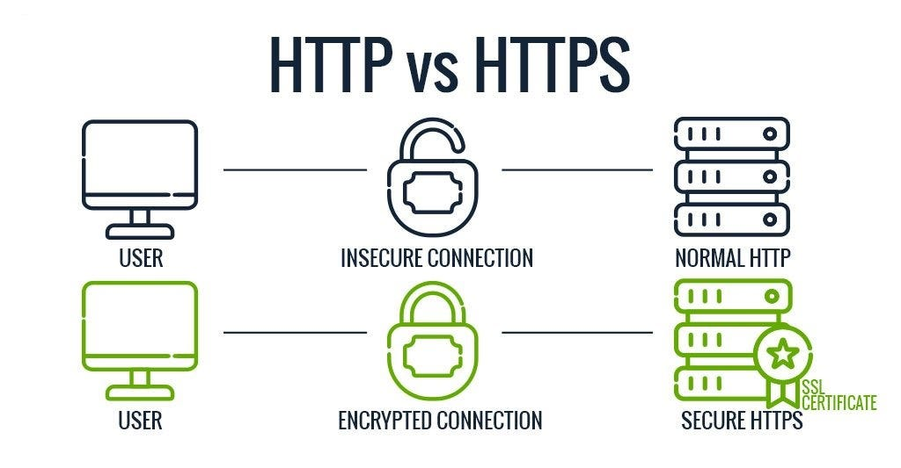
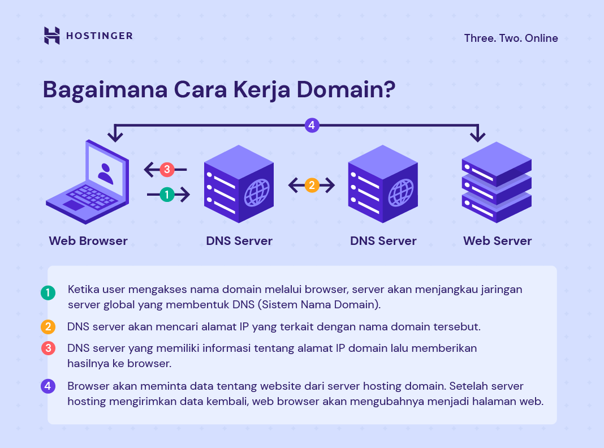
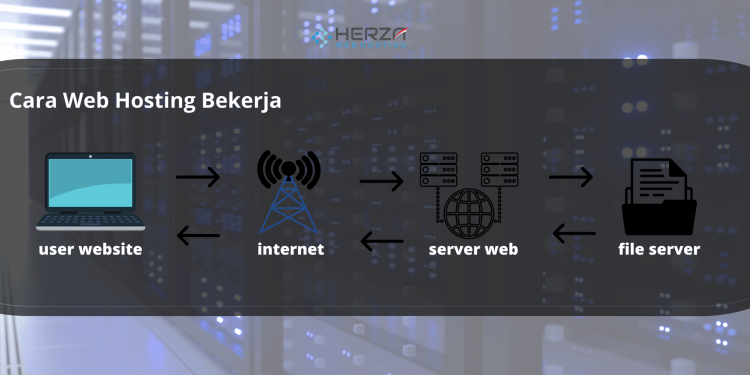
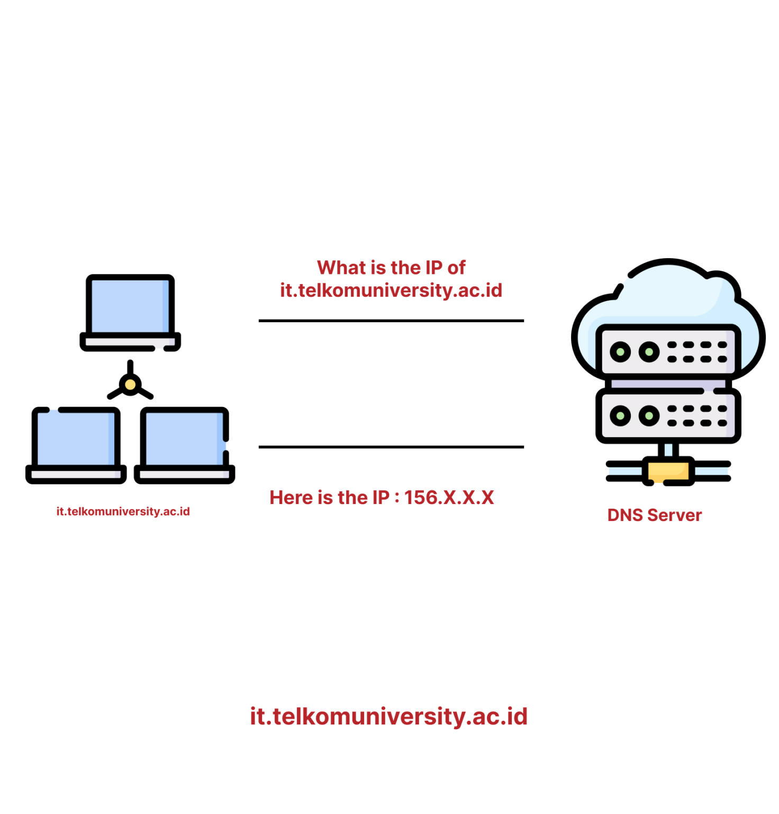
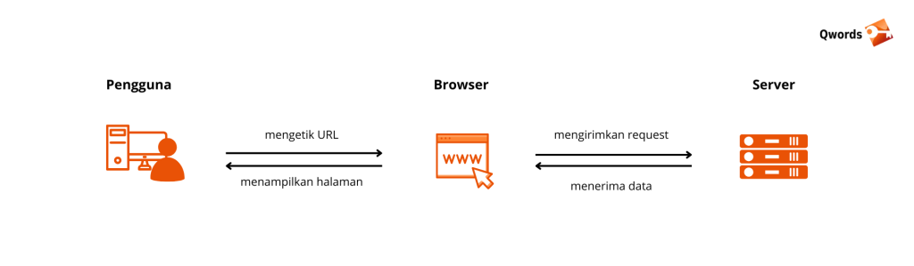

1. Cara Kerja Internet Secara Umum

Prinsip kerja Internet adalah mentransmisikan berbagai data dan informasi kepada komputer yang saling terhubung. Proses transmisi tersebut bekerja menggunakan protokol TCP dan alamat IP.
Sebelum dapat menikmati layanan internet, Anda harus membeli paket internet terlebih dahulu di perusahaan ISP (Internet Service Provider).
Perusahaan ISP inilah yang akan memberikan alamat IP di perangkat yang Anda gunakan dan dapat terhubung dengan server ISP selaku penyedia layanan.
Dua protokol tersebut bekerja bersamaan supaya transmisi data di Internet berjalan konsisten, terlepas dari perangkat yang digunakan untuk mengakses Internet.
Data dikirim dalam bentuk pesan dan paket ketika melalui proses transmisi di Internet. Sebelum proses transmisi, data terbagi menjadi beberapa bagian kecil yang disebut paket (packets).
Paket-paket tersebut terkumpul menjadi satu bentuk yang disebut pesan (message) untuk dikirimkan melalui Internet. Paket dan pesan tersebut berpindah dari satu komputer dan lainnya menggunakan TCP/IP.
TCP dan IP address merupakan dua protokol yang berbeda tetapi saling bekerja sama dalam proses transmisi data. Tujuannya adalah memastikan tidak ada paket yang hilang ketika membentuk pesan.
Protokol tersebut juga bertugas untuk memastikan seluruh paketnya disusun dalam urutan yang tepat serta tidak ada keterlambatan dalam transmisi data sehingga memengaruhi kualitasnya.
Kesimpulannya, Internet bekerja dengan menghubungkan miliaran perangkat di seluruh dunia dengan protokol TCP/IP.
Kehadiran Internet membuat proses transmisi data berjalan lancar dan tidak terhambat, serta diterima dalam keadaan utuh.
Sumber:
Cloudeka - Cara Kerja Internet
2. HTTP dan HTTPS
Hypertext transfer protocol (HTTP) adalah sebuah protokol atau seperangkat aturan komunikasi untuk komunikasi klien-server. Saat Anda mengunjungi situs web, peramban Anda mengirimkan permintaan HTTP ke server web, yang merespons dengan respons HTTP.
hypertext transfer protocol secure (HTTPS) adalah versi atau perpanjangan HTTP yang lebih aman. Di HTTPS, peramban dan server akan membuat koneksi yang aman dan terenkripsi sebelum mentransfer data.

Cara Kerja HTTP
HTTP adalah protokol lapisan aplikasi dalam model komunikasi jaringan Interkoneksi Sistem Terbuka (OSI).
Protokol ini menentukan beberapa jenis permintaan dan respons. Misalnya, ketika Anda ingin melihat beberapa data dari situs web, Anda mengirim permintaan HTTP GET.
Jika Anda ingin mengirim beberapa informasi, seperti mengisi formulir kontak, Anda mengirim permintaan HTTP PUT.
Demikian pula, server mengirimkan berbagai jenis respons HTTP dalam bentuk kode angka dan data. Berikut beberapa contohnya:
- 200 - OK
- 400 - Bad request
- 404 - Resource not found
Cara Kerja HTTPS
HTTP mengirimkan data yang tidak terenkripsi, yang berarti bahwa informasi yang dikirim dari peramban dapat disadap dan dibaca oleh pihak ketiga.
Hal ini bukanlah proses yang ideal, jadi proses tersebut diperpanjang ke HTTPS untuk menambahkan lapisan keamanan lain untuk komunikasi.
HTTPS menggabungkan permintaan dan respons HTTP dengan teknologi SSL dan TLS.
Situs web HTTPS harus mendapatkan sertifikat SSL/TLS dari otoritas sertifikat (CA) independen.
Situs web ini berbagi sertifikat dengan peramban sebelum bertukar data untuk membangun kepercayaan.
Sertifikat SSL juga berisi informasi kriptografi sehingga peramban server dan web dapat bertukar data terenkripsi atau acak. Prosesnya berlangsung seperti ini:
- Anda mengunjungi situs web HTTPS dengan mengetikkan format URL https:// di bilah alamat peramban Anda.
- Peramban mencoba untuk memverifikasi keaslian situs dengan meminta sertifikat SSL server.
- Server mengirimkan sertifikat SSL yang berisi kunci publik sebagai balasan.
- Sertifikat SSL situs web membuktikan identitas server. Setelah peramban puas dengan bukti tersebut, peramban menggunakan kunci publik untuk mengenkripsi dan mengirim pesan yang berisi kunci sesi rahasia.
- Server web menggunakan kunci privat untuk mendekripsi pesan dan mengambil kunci sesi. Kemudian, server web mengenkripsi kunci sesi dan mengirim pesan pernyataan ke peramban.
- Peramban dan server web kini beralih menggunakan kunci sesi yang sama untuk bertukar pesan dengan aman.
Sumber:
AWS - The Difference Between HTTPS and HTTP
3. Nama Domain
Singkatnya, nama domain adalah alamat yang perlu Anda gunakan untuk membuka dan mengakses website.
Perumpamaannya seperti ini: website yang Anda miliki adalah sebuah rumah. Nah, layanan web hosting adalah tanah tempat Anda mendirikan rumah, sedangkan domain adalah alamat yang bisa digunakan orang-orang untuk menuju ke rumah Anda.
Jadi, bisa dibilang bahwa domain adalah salah satu komponen utama website. Nama domain terdiri dari dua elemen utama, yaitu nama situs dan ekstensi. Contohnya, Facebook.com memuat nama situs (Facebook) dan ekstensi (.com).
Registrasi nama domain dikelola oleh organisasi bernama ICANN (Internet Corporation for Assigned Names and Numbers). ICANN menentukan ekstensi yang tersedia dan memiliki database terpusat yang berisi informasi pengarahan nama domain.

Sumber:
Hostinger - Apa Itu Domain?
4. Hosting
Hosting adalah sebuah layanan yang menyediakan dalam sebuah server untuk menyimpan file serta data website seperti file html, php, css dan gambar yang dapat memungkinkan sebuah website bisa diakses melalui internet.
Fungsi hosting adalah sebagai rumah dari sebuah website agar dapat diakses secara online melalui internet. Tanpa adanya hosting, website tidak akan dapat diakses oleh penggunjung.
Oleh karena itu, hosting memungkinkan sebuah website dapat diakses dari berbagai perangkat, seperti komputer, laptop, tablet, dan smartphone.

Cara Kerja
- Website disimpan di Server Hosting: File website seperti gambar, video, script, database dan konten lainnya akan disimpan di server hosting
- Pengunjung Akses Website: Pengunjung akan mengetikan alamat domain di browser, nah dari permintaan tersebut akan dikirimkan ke server hosting
- Permintaan dikirimkan Ke Server Hosting: Permintaan dari pengunjung akan dikirim ke server hosting yang akan memproses permintaan
- Server Hosting Mengirimkan File Ke Browser: Setelah permintaanya diterima, server hosting akan mengirimkan file yang diminta seperti file HTML, gambar, atau konten lainnya ke browser pengunjung tadi
- Pengunjung Dapat Mengakses Website: Setelah browser menerima file website dari server hosting, pengunjung dapat mengakses website dengan melihat halaman web yang terbentuk di browser.
Sumber:
Herza - Apa Itu Hosting?
5. DNS (Domain Name System)
DNS singkatan dari Domain Name System Server. DNS adalah komponen dalam infrastruktur jaringan yang bertugas untuk menerjemahkan nama domain yang mudah diingat menjadi alamat IP numerik yang unik.
DNS Server berperan penting dalam pengalamatan jaringan karena memungkinkan pengguna untuk mengakses situs web, layanan online, dan sumber daya jaringan lainnya dengan menggunakan nama domain alih-alih harus menghafal alamat IP numerik yang panjang.

Cara Kerja
- Permintaan DNS: Ketika pengguna memasukkan nama domain di peramban web atau aplikasi, perangkat pengguna akan mengirimkan permintaan DNS ke server DNS terdekat yang dikonfigurasi dalam pengaturan jaringan. Server DNS ini disebut sebagai resolver DNS.
- Pertanyaan ke Resolver DNS: Resolver DNS menerima permintaan DNS dari perangkat pengguna dan memeriksa apakah informasi yang diminta tersedia dalam cache-nya. Jika informasi tersebut ada dalam cache, resolver DNS akan mengembalikan alamat IP yang sesuai tanpa perlu mengirim permintaan ke server DNS lainnya.
- Pertanyaan ke Server DNS Hierarchy: Jika informasi yang diminta tidak ada dalam cache resolver DNS, resolver DNS akan mengirimkan permintaan ke server DNS berikutnya dalam hierarki DNS. Biasanya, ini adalah server DNS yang diatur oleh penyedia layanan internet (ISP) atau server DNS tingkat atas yang disebut sebagai DNS root server.
- Penelusuran DNS: Server DNS yang menerima permintaan DNS akan mencoba menemukan informasi yang diminta dengan melakukan penelusuran (query) melalui hierarki DNS. Proses ini melibatkan serangkaian permintaan dan respons antara server DNS hingga informasi yang diminta ditemukan atau tidak tersedia.
- Respons DNS: Setelah server DNS menemukan informasi yang diminta, server DNS akan mengirimkan respons ke resolver DNS yang awalnya mengirim permintaan DNS. Respons ini berisi alamat IP yang sesuai dengan nama domain yang diminta.
- Pengembalian Alamat IP: Resolver DNS menerima respons DNS dari server DNS dan mengembalikan alamat IP yang sesuai ke perangkat pengguna yang awalnya mengirim permintaan DNS.
- Akses ke Sumber Daya: Perangkat pengguna menggunakan alamat IP yang diterima untuk mengakses sumber daya yang dimaksud, seperti situs web, layanan online, atau sumber daya jaringan lainnya.
Sumber:
IT Telkom University - DNS Adalah
6. Browser
Browser adalah alat yang digunakan untuk melihat halaman website. Artinya, dengan browser para pengguna dapat mengakses konten dari sebuah website di internet.
Browser bekerja dengan proses sederhana, yaitu dengan mengirim request ke server website menggunakan protokol HTTP saat pengguna mengetik alamat domain di address bar lalu menampilkan halaman website yang diminta oleh pengguna berupa format gambar, teks, dan video.

Cara Kerja
- Melakukan Request ke Server: Saat pengguna mengetik alamat website (URL) di address bar, browser akan melakukan melakukan permintaan ke server website yang dituju menggunakan protokol HTTP atau HTTPS.
- Menerima Data Response: Server mengirimkan data halaman website berupa kode HTML, CSS, JavaScript, dan aset image atau video ke browser.
- Menampilkan Halaman: Data yang diterima dari server akan diolah oleh browser dan dikonstruksi untuk menjadi suatu visual tampilan halaman website.
Sumber:
Qwords - Apa Itu Web Browser?